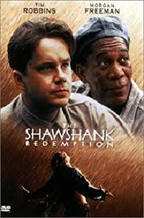
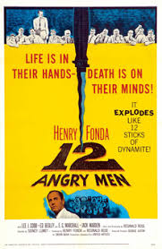
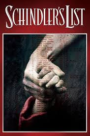
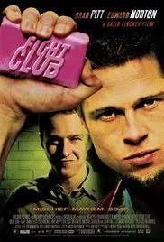

Crime, Drama
14 October 1994 (USA)
Two imprisoned men bond over a number of years, finding solace and eventual redemption through acts of common decency.

Crime, Drama
April 1957 (USA)
A jury holdout attempts to prevent a miscarriage of justice by forcing his colleagues to reconsider the evidence.

Biography, Drama, History
21 May 1994 (Russia)
In German-occupied Poland during World War II, Oskar Schindler gradually becomes concerned for his Jewish workforce after witnessing their persecution by the Nazi Germans.

Crime, Drama
13 January 2000 (Russia)
An insomniac office worker, looking for a way to change his life, crosses paths with a devil-may-care soap maker, forming an underground fight club that evolves into something much, much more.